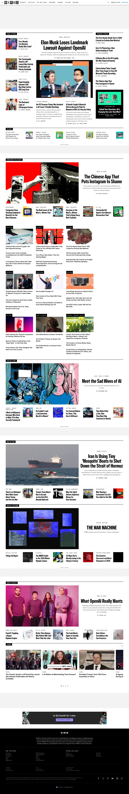

Wired 的 Design.md 主题展示，围绕消费品牌、电商零售、品牌展示组织页面。
Tech magazine. Paper-white broadsheet density, custom serif display, mono kickers, ink-blue links.

#000000: #000000#057dbc: #057dbc#1a1a1a: #1a1a1a#ffffff: #ffffff#757575: #757575#e0e0e0: #e0e0e0#f5f5f5: #f5f5f5#a0a0a0: #a0a0a0#fbbf24: #fbbf24#8a8a8a: #8a8a8a#0a0a0a: #0a0a0adisplay: WiredDisplaybody: BreveTextmono: WiredMonohints: WiredDisplay,BreveText,WiredMono,mono-kickers,Apercu,Helvetica Neue,Inter,Manropecontrol: 0pxcard: 0pxpreview: 0pxpill: 9999pxsource: design-mdxxs: 2pxxs: 4pxsm: 8pxmd: 12pxlg: 16pxxl: 20px2xl: 24px3xl: 32px4xl: 48pxsource: design-md